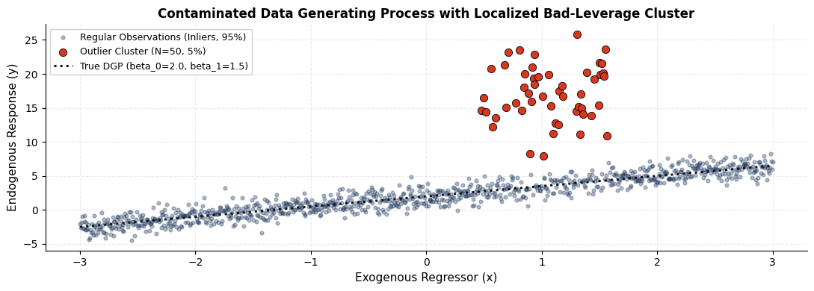
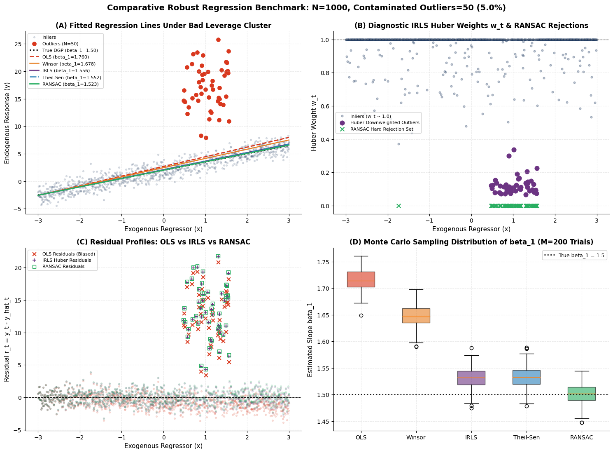
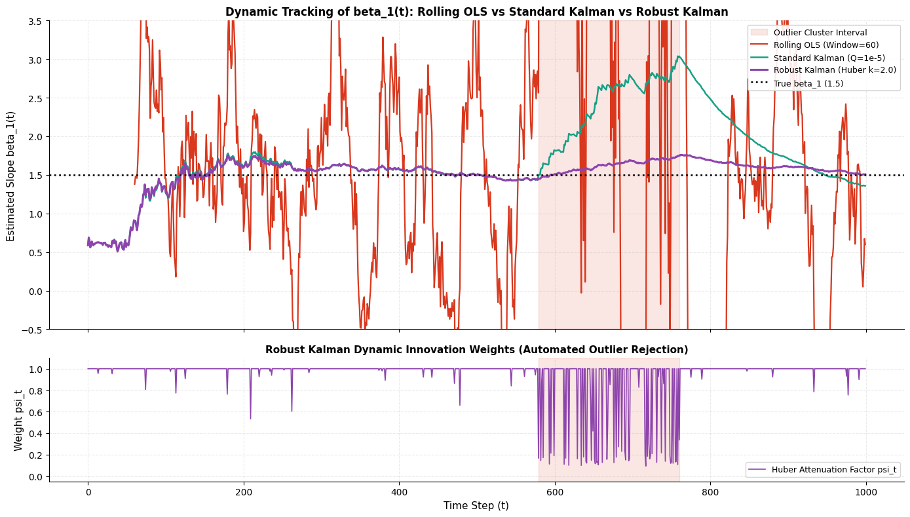

Robust Regression & Outlier Handling in Quantitative Finance#
A Methodological and Econometric Guide to High-Breakdown Estimation#
Executive Summary & Research Question#
Research Question:
How to reliably detect, model, and mitigate the impact of outliers in linear regression parameter estimation across both cross-sectional batch analysis and dynamic time-series / streaming environments?
In financial econometrics and quantitative trading, return and spread distributions consistently display heavy tails (leptokurtosis), discrete regime shifts, structural breaks, liquidity micro-structure dislocations, and data recording errors (bad ticks). The naive application of Ordinary Least Squares (OLS) results in severe parameter distortions–such as biased market \(\beta\) sensitivities or unstable cointegration hedge ratios–leading to flawed portfolio construction, erratic rebalancing, and unhedged risk exposure.
This research addresses the question through a rigorous two-part framework:
Part 1 – Static Batch Estimation: Comparative analysis of OLS, MAD-based Winsorized OLS, Iteratively Reweighted Least Squares (IRLS with Huber M-estimator), Theil-Sen, and RANSAC under an adversarial local bad-leverage outlier cluster. We demonstrate why contaminated in-sample RMSE is a misleading metric and validate estimator distributions via a Monte Carlo simulation (\(M = 200\)).
Part 2 – Adaptive Online Estimation: Evaluation of Rolling OLS (fixed trailing window), Standard Kalman Filter (infinite exponential memory), and an explicit Robust Kalman Filter (Huber-dampened innovation) engineered to reject transient anomalies in real-time streaming data.
Outlier Taxonomy in Quantitative Finance#
Outlier Type |
Econometric Definition |
Financial Consequence |
Recommended Treatment |
|---|---|---|---|
Vertical Outliers |
Anomalies purely in the dependent variable \(y\) |
Inflates residual variance \(\sigma^2\), biases the intercept \(\beta_0\) |
M-Estimators (Huber/Bisquare), Winsorization |
Good Leverage Points |
Extreme in feature space \(x\), but consistent with the true linear manifold |
Reduces parameter standard errors, preserves slope |
Retain in estimation set |
Bad Leverage Points |
Extreme in feature space \(x\) with high vertical residual |
Severely rotates the regression slope \(\beta_1\) and shifts intercept |
High-breakdown estimators (RANSAC, Theil-Sen) |
Regime Shifts / Clusters |
Temporally or spatially correlated pockets of anomalies |
Causes window-exit shocks in rolling models and filter divergence |
Robust Kalman Filter, Markov-Switching models |
Batch Estimator Methodology Matrix#
Estimator |
Optimization Objective |
Breakdown Point |
Gaussian Efficiency |
Primary Quantitative Use Case |
|---|---|---|---|---|
OLS |
\(\min_\beta \sum r_i^2\) |
0% (1 point suffices) |
100% (BLUE) |
Benchmark under strict i.i.d. Gaussian assumptions |
Winsorized OLS (MAD) |
\(\min_\beta \sum (\tilde{y}_i - X_i\beta)^2\) via MAD clamping |
Threshold-dependent (~5%) |
High |
Standard in multi-factor equity models (Barra, Axioma) |
IRLS (Huber M-Est.) |
\(\min_\beta \sum \rho_k(r_i)\) via weights \(w_i(r_i)\) |
0% (leverage), 50% (vertical) |
95% (with \(k=1.345\)) |
Market Beta estimation, yield curve term structure fitting |
Theil-Sen |
Median of pairwise slopes |
~29.3% |
~64% |
Non-parametric bivarate regression, robust trendlines |
RANSAC |
Maximize inlier consensus cardinality |
up to 50% |
Variable (hard rejection) |
High-noise signal extraction, tick-data anomaly filtering |
Setup#
We initialize numerical packages and configure Matplotlib aesthetics to adhere to publication-grade quantitative research standards.
import numpy as np
import pandas as pd
import matplotlib.pyplot as plt
import warnings
from IPython.display import display
# Visualization settings
warnings.filterwarnings('ignore')
plt.rcParams.update({
'axes.spines.top': False,
'axes.spines.right': False,
'axes.grid': True,
'grid.alpha': 0.25,
'grid.linestyle': '--',
'figure.facecolor': 'white',
'axes.facecolor': 'white',
'font.size': 10,
'axes.labelsize': 11,
'axes.titlesize': 12,
'legend.fontsize': 9,
'figure.titlesize': 14
})
# Harmonized color palette across estimators
COLORS = {
'clean': '#1F3A60', # Deep Navy for regular inliers
'outlier': '#D9381E', # Crimson Red for outliers
'true': '#111111', # Charcoal Black for Ground Truth
'ols': '#D9381E', # Crimson for biased OLS
'winsor': '#E67E22', # Amber Orange for Winsorized OLS
'irls': '#6C3483', # Royal Purple for IRLS Huber
'theilsen': '#2980B9', # Cobalt Blue for Theil-Sen
'ransac': '#27AE60', # Emerald Green for RANSAC
'kalman': '#16A085', # Teal for Standard Kalman
'robust_kalman': '#8E44AD' # Deep Violet for Robust Kalman
}
print("Environment configured successfully.")
Environment configured successfully.
Data Generating Process#
We specify a ground-truth linear DGP:
with underlying structural parameters:
\(\beta_0^* = 2.0\) (true intercept)
\(\beta_1^* = 1.5\) (true slope / sensitivity)
Gaussian error \(\sigma = 1.0\) across \(N = 1000\) observations.
Generating an Adversarial Leverage Cluster#
Rather than introducing isolated, randomly dispersed outliers, we inject an adversarial cluster of \(N_{\text{out}} = 50\) observations (5.0% of the sample) localized around \(x \approx 1.0\) (semi-bandwidth \(\pm 0.6\)). This simultaneously creates:
High Leverage Coordinates (\(h_{ii}\)): Observations located away from the sample center \(\bar{x} = 0\), giving them strong structural pull.
Substantial Vertical Displacement (offset \(\approx +13.0\), \(\sigma_{\text{out}} = 4.0\)): Incompatible with the true data-generating manifold.
np.random.seed(42)
N = 1000
N_OUT = 50 # Exactly 5.0% of sample size
BETA0_TRUE = 2.0
BETA1_TRUE = 1.5
# Exogenous regressor grid and standard i.i.d. noise
x = np.linspace(-3.0, 3.0, N)
eps = np.random.normal(0.0, 1.0, N)
y_clean = BETA0_TRUE + BETA1_TRUE * x + eps
# Injection of an adversarial bad-leverage cluster
out_x_center = 1.0
out_x_window = 0.6
out_y_offset = 13.0
out_y_spread = 4.0
candidate_idx = np.where(np.abs(x - out_x_center) < out_x_window)[0]
out_idx = np.random.choice(candidate_idx, N_OUT, replace=False)
y_dirty = y_clean.copy()
y_line_at_cluster = BETA0_TRUE + BETA1_TRUE * x[out_idx]
y_dirty[out_idx] = y_line_at_cluster + out_y_offset + np.random.normal(0.0, out_y_spread, N_OUT)
is_out = np.zeros(N, dtype=bool)
is_out[out_idx] = True
# Design matrix X with column of ones
X = np.column_stack([np.ones(N), x])
# Leverage diagnostics via Hat Matrix H = X(X^T X)^(-1) X^T
H = X @ np.linalg.inv(X.T @ X) @ X.T
leverage_h = np.diag(H)
leverage_threshold = 2.0 * X.shape[1] / N # Standard rule of thumb: 2p/N
print(f"Total Sample Size: N = {N}")
print(f"Contaminated Outliers: N_out = {N_OUT} ({N_OUT/N:.1%} of dataset)")
print(f"Ground Truth Parameters: beta_0 = {BETA0_TRUE:.2f}, beta_1 = {BETA1_TRUE:.2f}")
print(f"Mean Leverage h_ii: {leverage_h.mean():.4f} | Alert Leverage Threshold (2p/N): {leverage_threshold:.4f}")
print(f"Mean Leverage of Outlier Cluster: {leverage_h[is_out].mean():.4f}")
# Exploratory scatter plot of contaminated data
fig, ax = plt.subplots(figsize=(11, 4))
ax.scatter(x[~is_out], y_dirty[~is_out], color=COLORS['clean'], alpha=0.35, s=12, label='Regular Observations (Inliers, 95%)')
ax.scatter(x[is_out], y_dirty[is_out], color=COLORS['outlier'], s=55, edgecolor='black', linewidth=0.6, zorder=5, label=f'Outlier Cluster (N={N_OUT}, 5%)')
x_grid = np.linspace(x.min(), x.max(), 300)
ax.plot(x_grid, BETA0_TRUE + BETA1_TRUE * x_grid, color=COLORS['true'], lw=2.2, ls=':', label=f'True DGP (beta_0={BETA0_TRUE}, beta_1={BETA1_TRUE})')
ax.set_title('Contaminated Data Generating Process with Localized Bad-Leverage Cluster', fontweight='bold')
ax.set_xlabel('Exogenous Regressor (x)')
ax.set_ylabel('Endogenous Response (y)')
ax.legend(frameon=True, facecolor='white', framealpha=0.9)
plt.tight_layout()
plt.show()
Total Sample Size: N = 1000
Contaminated Outliers: N_out = 50 (5.0% of dataset)
Ground Truth Parameters: beta_0 = 2.00, beta_1 = 1.50
Mean Leverage h_ii: 0.0020 | Alert Leverage Threshold (2p/N): 0.0040
Mean Leverage of Outlier Cluster: 0.0014

PART 1: Static Batch Estimation#
We implement and evaluate five distinct estimation approaches to neutralize the outlier cluster:
OLS#
Minimizes the sum of squared residuals:
The quadratic loss function weights an outlier with \(r_i = 15\) by a factor of \(15^2 = 225\) relative to an inlier with \(r_i = 1\). Its theoretical breakdown point is 0%.
Winsorized OLS#
In commercial multi-factor equity risk models (e.g., Barra, Axioma), cross-sectional variables are winsorized via the Median Absolute Deviation (MAD):
The scale estimator \(\hat{\sigma}_{\text{MAD}} = \frac{\text{median}(|y - \text{median}(y)|)}{0.6745}\) provides a consistent estimate of the standard deviation under normality.
IRLS (Huber)#
Replaces the \(L_2\) loss with the hybrid Huber loss function \(\rho_k(r)\):
Optimized iteratively with data-dependent weights \(w_i = \min\left(1, \frac{k\hat{\sigma}}{|r_i|}\right)\). With \(k = 1.345\), the estimator preserves 95% asymptotic efficiency under Gaussianity while downgrading extreme residual penalties from quadratic to linear.
Theil-Sen#
A non-parametric estimator defined by the median of all pairwise bivariate slopes:
Provides an asymptotic breakdown point of ~29.3% and is resilient against severe asymmetric distortions.
RANSAC#
An iterative non-deterministic algorithm based on minimal sample consensus:
Randomly sample 2 points to fit a candidate hypothesis line.
Quantify inliers whose absolute residual is within an automated threshold \(\tau = 3 \cdot \hat{\sigma}_{\text{MAD}}\).
Retain the model that maximizes the inlier consensus set.
Perform an OLS refit strictly on the consensus inlier subset. Theoretical breakdown point reaches up to 50%.
# ------------------------------------------------------------------------------
# 2.1 Standard OLS
# ------------------------------------------------------------------------------
beta_ols = np.linalg.lstsq(X, y_dirty, rcond=None)[0]
b0_ols, b1_ols = beta_ols
r_ols = y_dirty - (b0_ols + b1_ols * x)
# ------------------------------------------------------------------------------
# 2.2 MAD-Based Winsorized OLS
# ------------------------------------------------------------------------------
def fit_winsorized_ols(x_arr, y_arr, k_mad=3.0):
med_y = np.median(y_arr)
mad_y = np.median(np.abs(y_arr - med_y)) / 0.6745
lower_bound = med_y - k_mad * mad_y
upper_bound = med_y + k_mad * mad_y
y_win = np.clip(y_arr, lower_bound, upper_bound)
X_mat = np.column_stack([np.ones(len(x_arr)), x_arr])
beta_win = np.linalg.lstsq(X_mat, y_win, rcond=None)[0]
return beta_win, y_win
beta_win, y_winsorized = fit_winsorized_ols(x, y_dirty, k_mad=3.0)
b0_win, b1_win = beta_win
r_win = y_dirty - (b0_win + b1_win * x)
# ------------------------------------------------------------------------------
# 2.3 IRLS with Huber M-Estimator
# ------------------------------------------------------------------------------
def fit_irls_huber(X_mat, y_arr, k=1.345, max_iter=100, tol=1e-8):
beta = np.linalg.lstsq(X_mat, y_arr, rcond=None)[0]
w = np.ones(len(y_arr))
for it in range(max_iter):
r = y_arr - X_mat @ beta
sigma_mad = np.median(np.abs(r)) / 0.6745
u = np.abs(r) / (k * sigma_mad + 1e-12)
w = np.where(u <= 1.0, 1.0, 1.0 / u)
# Weighted Least Squares step
W_half = np.sqrt(w)[:, None]
X_w = X_mat * W_half
y_w = y_arr * np.sqrt(w)
beta_next = np.linalg.lstsq(X_w, y_w, rcond=None)[0]
if np.max(np.abs(beta_next - beta)) < tol:
break
beta = beta_next
return beta, w, it + 1
beta_irls, w_final, irls_iters = fit_irls_huber(X, y_dirty, k=1.345)
b0_irls, b1_irls = beta_irls
r_irls = y_dirty - (b0_irls + b1_irls * x)
# ------------------------------------------------------------------------------
# 2.4 Theil-Sen Estimator (Vectorized Subsampling for Computational Efficiency)
# ------------------------------------------------------------------------------
def fit_theil_sen(x_arr, y_arr, max_pairs=100000, rng_seed=42):
n = len(x_arr)
rng = np.random.default_rng(rng_seed)
idx_i = rng.integers(0, n, max_pairs)
idx_j = rng.integers(0, n, max_pairs)
valid = idx_i != idx_j
idx_i, idx_j = idx_i[valid], idx_j[valid]
dx = x_arr[idx_j] - x_arr[idx_i]
non_zero = np.abs(dx) > 1e-9
dx = dx[non_zero]
dy = y_arr[idx_j[non_zero]] - y_arr[idx_i[non_zero]]
slopes = dy / dx
slope_med = np.median(slopes)
intercept_med = np.median(y_arr - slope_med * x_arr)
return np.array([intercept_med, slope_med])
beta_theilsen = fit_theil_sen(x, y_dirty)
b0_ts, b1_ts = beta_theilsen
r_ts = y_dirty - (b0_ts + b1_ts * x)
# ------------------------------------------------------------------------------
# 2.5 RANSAC Regression
# ------------------------------------------------------------------------------
def fit_ransac(X_mat, y_arr, n_iter=1000, residual_threshold=None, rng_seed=42):
rng = np.random.default_rng(rng_seed)
n = X_mat.shape[0]
# Automatic robust threshold via MAD of initial residuals
if residual_threshold is None:
b_init = np.linalg.lstsq(X_mat, y_arr, rcond=None)[0]
r_init = y_arr - X_mat @ b_init
residual_threshold = 3.0 * (np.median(np.abs(r_init - np.median(r_init))) / 0.6745)
best_inliers = None
best_count = -1
best_beta = None
for _ in range(n_iter):
idx = rng.choice(n, size=2, replace=False)
try:
b_sample = np.linalg.lstsq(X_mat[idx], y_arr[idx], rcond=None)[0]
except np.linalg.LinAlgError:
continue
res = np.abs(y_arr - X_mat @ b_sample)
inliers = res < residual_threshold
count = np.sum(inliers)
if count > best_count:
best_count = count
best_inliers = inliers
best_beta = b_sample
# Final OLS refit on the identified consensus set
beta_refined = np.linalg.lstsq(X_mat[best_inliers], y_arr[best_inliers], rcond=None)[0]
return beta_refined, best_inliers, residual_threshold
beta_ransac, inliers_ransac, tau_ransac = fit_ransac(X, y_dirty, n_iter=1000)
b0_ransac, b1_ransac = beta_ransac
r_ransac = y_dirty - (b0_ransac + b1_ransac * x)
print("Batch model estimation completed successfully.")
Batch model estimation completed successfully.
Performance Benchmark#
The Contaminated In-Sample RMSE Paradox#
A critical pitfall in quantitative modeling is evaluating estimator quality via in-sample root mean squared error on the contaminated dataset (\(RMSE_{\text{dirty}}\)).
Because OLS is mathematically constrained to minimize this exact quantity, it will artificially report the lowest \(RMSE_{\text{dirty}}\), while severely distorting the structural slope!
The statistically sound evaluation criteria are:
Parameter Bias: \(\text{Bias}(\beta_0) = |\hat{\beta}_0 - \beta_0^*|\) and \(\text{Bias}(\beta_1) = |\hat{\beta}_1 - \beta_1^*|\)
Total Parameter Loss: \(\|\hat{\beta} - \beta^*\|_2 = \sqrt{(\hat{\beta}_0 - \beta_0^*)^2 + (\hat{\beta}_1 - \beta_1^*)^2}\)
Out-of-Sample / Clean RMSE (\(RMSE_{\text{clean}}\)): Prediction error evaluated strictly on the 95% regular inlier observations.
# Quantitative performance metric computation
def compute_metrics(b0, b1, y_obs, is_out_mask):
b_err = np.sqrt((b0 - BETA0_TRUE)**2 + (b1 - BETA1_TRUE)**2)
y_pred = b0 + b1 * x
rmse_dirty = np.sqrt(np.mean((y_obs - y_pred)**2))
rmse_clean = np.sqrt(np.mean((y_obs[~is_out_mask] - y_pred[~is_out_mask])**2))
return abs(b0 - BETA0_TRUE), abs(b1 - BETA1_TRUE), b_err, rmse_clean, rmse_dirty
metrics_data = []
models = [
('True DGP (Oracle)', BETA0_TRUE, BETA1_TRUE),
('Standard OLS', b0_ols, b1_ols),
('Winsorized OLS (MAD)', b0_win, b1_win),
('IRLS (Huber M-Est.)', b0_irls, b1_irls),
('Theil-Sen', b0_ts, b1_ts),
('RANSAC', b0_ransac, b1_ransac)
]
for name, b0, b1 in models:
if 'Oracle' in name:
metrics_data.append({
'Estimator': name, 'beta_0': b0, 'beta_1': b1,
'Bias beta_0': 0.0, 'Bias beta_1': 0.0, 'Parametric Loss ||beta-beta*||': 0.0,
'Clean RMSE': np.sqrt(np.mean((y_dirty[~is_out] - (b0 + b1 * x[~is_out]))**2)),
'Contaminated RMSE (Misleading)': np.sqrt(np.mean((y_dirty - (b0 + b1 * x))**2))
})
else:
e0, e1, b_err, rc, rd = compute_metrics(b0, b1, y_dirty, is_out)
metrics_data.append({
'Estimator': name, 'beta_0': b0, 'beta_1': b1,
'Bias beta_0': e0, 'Bias beta_1': e1, 'Parametric Loss ||beta-beta*||': b_err,
'Clean RMSE': rc, 'Contaminated RMSE (Misleading)': rd
})
df_results = pd.DataFrame(metrics_data).set_index('Estimator')
display(df_results.round(4))
| beta_0 | beta_1 | Bias beta_0 | Bias beta_1 | Parametric Loss ||beta-beta*|| | Clean RMSE | Contaminated RMSE (Misleading) | |
|---|---|---|---|---|---|---|---|
| Estimator | |||||||
| True DGP (Oracle) | 2.0000 | 1.5000 | 0.0000 | 0.0000 | 0.0000 | 0.9742 | 3.2826 |
| Standard OLS | 2.6887 | 1.7598 | 0.6887 | 0.2598 | 0.7360 | 1.2480 | 3.1778 |
| Winsorized OLS (MAD) | 2.4649 | 1.6779 | 0.4649 | 0.1779 | 0.4978 | 1.1031 | 3.1888 |
| IRLS (Huber M-Est.) | 2.0995 | 1.5562 | 0.0995 | 0.0562 | 0.1143 | 0.9787 | 3.2512 |
| Theil-Sen | 2.0894 | 1.5524 | 0.0894 | 0.0524 | 0.1036 | 0.9775 | 3.2537 |
| RANSAC | 2.0129 | 1.5231 | 0.0129 | 0.0231 | 0.0264 | 0.9734 | 3.2747 |
Monte Carlo Diagnostics#
To validate robustness beyond a single pseudo-random realization, we execute an empirical Monte Carlo experiment across \(M = 200\) independent simulations and evaluate the sampling distribution of \(\hat{\beta}_1\).
# ------------------------------------------------------------------------------
# Monte Carlo Simulation (M = 200 independent trials)
# ------------------------------------------------------------------------------
M_SIM = 200
mc_results = {'OLS': [], 'Winsor': [], 'IRLS': [], 'Theil-Sen': [], 'RANSAC': []}
mc_rng = np.random.default_rng(101)
for m in range(M_SIM):
e_m = mc_rng.normal(0, 1, N)
y_m = BETA0_TRUE + BETA1_TRUE * x + e_m
c_idx = mc_rng.choice(candidate_idx, N_OUT, replace=False)
y_m[c_idx] = (BETA0_TRUE + BETA1_TRUE * x[c_idx] + out_y_offset + mc_rng.normal(0, out_y_spread, N_OUT))
# OLS fit
b_ols_m = np.linalg.lstsq(X, y_m, rcond=None)[0]
mc_results['OLS'].append(b_ols_m[1])
# Winsorized OLS fit
b_win_m, _ = fit_winsorized_ols(x, y_m)
mc_results['Winsor'].append(b_win_m[1])
# IRLS Huber fit
b_irls_m, _, _ = fit_irls_huber(X, y_m)
mc_results['IRLS'].append(b_irls_m[1])
# Theil-Sen fit
b_ts_m = fit_theil_sen(x, y_m, max_pairs=30000, rng_seed=m)
mc_results['Theil-Sen'].append(b_ts_m[1])
# RANSAC fit
b_ran_m, _, _ = fit_ransac(X, y_m, n_iter=300, rng_seed=m)
mc_results['RANSAC'].append(b_ran_m[1])
df_mc = pd.DataFrame(mc_results)
# ------------------------------------------------------------------------------
# 4-Panel Visualization
# ------------------------------------------------------------------------------
fig, axes = plt.subplots(2, 2, figsize=(15, 11))
x_grid = np.linspace(x.min(), x.max(), 300)
# PANEL A: Fitted Regression Lines
ax = axes[0, 0]
ax.scatter(x[~is_out], y_dirty[~is_out], color=COLORS['clean'], alpha=0.15, s=8, label='Inliers')
ax.scatter(x[is_out], y_dirty[is_out], color=COLORS['outlier'], s=45, label=f'Outliers (N={N_OUT})')
ax.plot(x_grid, BETA0_TRUE + BETA1_TRUE * x_grid, color=COLORS['true'], lw=2.2, ls=':', label=f'True DGP (beta_1={BETA1_TRUE:.2f})')
ax.plot(x_grid, b0_ols + b1_ols * x_grid, color=COLORS['ols'], lw=2, ls='--', label=f'OLS (beta_1={b1_ols:.3f})')
ax.plot(x_grid, b0_win + b1_win * x_grid, color=COLORS['winsor'], lw=1.8, label=f'Winsor (beta_1={b1_win:.3f})')
ax.plot(x_grid, b0_irls + b1_irls * x_grid, color=COLORS['irls'], lw=2, label=f'IRLS (beta_1={b1_irls:.3f})')
ax.plot(x_grid, b0_ts + b1_ts * x_grid, color=COLORS['theilsen'], lw=1.8, ls='-.', label=f'Theil-Sen (beta_1={b1_ts:.3f})')
ax.plot(x_grid, b0_ransac + b1_ransac * x_grid, color=COLORS['ransac'], lw=2, ls='-', label=f'RANSAC (beta_1={b1_ransac:.3f})')
ax.set_title('(A) Fitted Regression Lines Under Bad Leverage Cluster', fontweight='bold')
ax.set_xlabel('Exogenous Regressor (x)')
ax.set_ylabel('Endogenous Response (y)')
ax.legend(fontsize=8, loc='upper left')
# PANEL B: IRLS Weights & RANSAC Classification
ax = axes[0, 1]
ax.scatter(x[~is_out], w_final[~is_out], color=COLORS['clean'], alpha=0.3, s=12, label='Inliers (w_t ~ 1.0)')
ax.scatter(x[is_out], w_final[is_out], color=COLORS['irls'], s=60, marker='o', label='Huber Downweighted Outliers')
ransac_flagged = ~inliers_ransac
ax.scatter(x[ransac_flagged], np.zeros(np.sum(ransac_flagged)), color=COLORS['ransac'], marker='x', s=50, lw=1.5, label='RANSAC Hard Rejection Set')
ax.axhline(1.0, color='gray', ls='--', lw=1)
ax.set_title('(B) Diagnostic IRLS Huber Weights w_t & RANSAC Rejections', fontweight='bold')
ax.set_xlabel('Exogenous Regressor (x)')
ax.set_ylabel('Huber Weight w_t')
ax.legend(fontsize=8, loc='center left')
# PANEL C: Residual Scatter Profiles
ax = axes[1, 0]
ax.scatter(x[~is_out], r_ols[~is_out], color=COLORS['ols'], alpha=0.15, s=8)
ax.scatter(x[is_out], r_ols[is_out], color=COLORS['ols'], s=40, marker='x', label='OLS Residuals (Biased)')
ax.scatter(x[~is_out], r_irls[~is_out], color=COLORS['irls'], alpha=0.15, s=8)
ax.scatter(x[is_out], r_irls[is_out], color=COLORS['irls'], s=40, marker='+', label='IRLS Huber Residuals')
ax.scatter(x[~is_out], r_ransac[~is_out], color=COLORS['ransac'], alpha=0.15, s=8)
ax.scatter(x[is_out], r_ransac[is_out], color=COLORS['ransac'], s=40, marker='s', facecolors='none', label='RANSAC Residuals')
ax.axhline(0, color='black', ls='--', lw=1)
ax.set_title('(C) Residual Profiles: OLS vs IRLS vs RANSAC', fontweight='bold')
ax.set_xlabel('Exogenous Regressor (x)')
ax.set_ylabel('Residual r_t = y_t - y_hat_t')
ax.legend(fontsize=8, loc='upper left')
# PANEL D: Monte Carlo Slope Distribution Boxplot
ax = axes[1, 1]
box_data = [df_mc['OLS'], df_mc['Winsor'], df_mc['IRLS'], df_mc['Theil-Sen'], df_mc['RANSAC']]
bp = ax.boxplot(box_data, labels=['OLS', 'Winsor', 'IRLS', 'Theil-Sen', 'RANSAC'], patch_artist=True)
box_colors = [COLORS['ols'], COLORS['winsor'], COLORS['irls'], COLORS['theilsen'], COLORS['ransac']]
for patch, color in zip(bp['boxes'], box_colors):
patch.set_facecolor(color)
patch.set_alpha(0.6)
ax.axhline(BETA1_TRUE, color=COLORS['true'], ls=':', lw=2, label=f'True beta_1 = {BETA1_TRUE}')
ax.set_title(f'(D) Monte Carlo Sampling Distribution of beta_1 (M={M_SIM} Trials)', fontweight='bold')
ax.set_ylabel('Estimated Slope beta_1')
ax.legend(fontsize=9, loc='upper right')
plt.suptitle(f'Comparative Robust Regression Benchmark: N={N}, Contaminated Outliers={N_OUT} (5.0%)', fontsize=14, fontweight='bold', y=0.995)
plt.tight_layout()
plt.show()

PART 2: Adaptive Online Estimation#
In quantitative trading strategies (such as statistical arbitrage, Pairs Trading cointegration hedge ratios, and dynamic market-making), data arrives sequentially, and parameter relations drift over time. Quantitative systems require online algorithms that satisfy two competing objectives:
Adaptivity: Rapidly update parameters when true structural market changes occur.
Robustness: Reject micro-structural market noise, flash crashes, and transient data recording errors.
Rolling OLS#
Re-estimates OLS on trailing observations \(\{(x_i, y_i)\}_{i=t-W}^{t-1}\).
The Window-Exit Shock: An anomaly receives full \(1/W\) weight upon entry and pollutes the hedge ratio for \(W\) steps. When it drops out of the window, a second abrupt and spurious parameter jump occurs.
Kalman Filter#
Models time-varying regression coefficients \(\theta_t = [\beta_{0,t}, \beta_{1,t}]^T\) as unobserved latent states:
Limitation: The measurement innovation \(\nu_t = y_t - H_t \hat{\theta}_t^-\) updates the state linearly through the Kalman gain \(K_t\). It lacks an endogenous outlier-rejection mechanism; setting \(Q \approx 0\) suppresses outlier impact only by sacrificing adaptivity entirely.
Robust Kalman Filter#
Combines real-time dynamic tracking with an M-estimator dampening rule on the normalized innovation:
Compute standardized innovation:
\[s_t = \frac{|\nu_t|}{\sqrt{S_t}}, \quad S_t = H_t P_t^- H_t^T + R\]Compute the Huber attenuation factor:
\[\begin{split}\psi_t = \begin{cases} 1 & \text{if } s_t \leq k \\ \frac{k}{s_t} & \text{if } s_t > k \end{cases}\end{split}\]Robust State Update: Attenuate the innovation before state correction: \(\nu_t^* = \psi_t \cdot \nu_t\). Under regular observations, \(\psi_t = 1.0\) (100% standard Kalman efficiency); during outliers, impact is bounded linearly.
# ------------------------------------------------------------------------------
# 5.1 Rolling OLS
# ------------------------------------------------------------------------------
def rolling_ols(x_arr, y_arr, window=60):
n = len(x_arr)
b0_path = np.full(n, np.nan)
b1_path = np.full(n, np.nan)
for t in range(window, n):
xs = x_arr[t-window:t]
ys = y_arr[t-window:t]
v_x = np.var(xs)
if v_x > 1e-12:
b1 = np.cov(xs, ys, bias=True)[0, 1] / v_x
b0 = ys.mean() - b1 * xs.mean()
b0_path[t] = b0
b1_path[t] = b1
return b0_path, b1_path
# ------------------------------------------------------------------------------
# 5.2 Standard Kalman Filter
# ------------------------------------------------------------------------------
def kalman_filter(x_arr, y_arr, Q_scale=1e-5, R_val=1.0):
n = len(x_arr)
theta = np.array([0.0, 0.0]) # Prior state initialization
P = np.eye(2) * 5.0 # Initial state covariance
Q = np.eye(2) * Q_scale # Process noise covariance
b0_path = np.zeros(n)
b1_path = np.zeros(n)
for t in range(n):
Ht = np.array([[1.0, x_arr[t]]])
# Prediction step
theta_pred = theta
P_pred = P + Q
# Innovation step
nu = y_arr[t] - (Ht @ theta_pred)[0]
S = (Ht @ P_pred @ Ht.T + R_val)[0, 0]
# Gain and State Update
K = (P_pred @ Ht.T) / S
theta = theta_pred + K.flatten() * nu
P = (np.eye(2) - K @ Ht) @ P_pred
b0_path[t] = theta[0]
b1_path[t] = theta[1]
return b0_path, b1_path
# ------------------------------------------------------------------------------
# 5.3 Robust Kalman Filter (Huber-Dampened Innovation)
# ------------------------------------------------------------------------------
def robust_kalman_filter(x_arr, y_arr, Q_scale=1e-5, R_val=1.0, k_huber=2.0):
n = len(x_arr)
theta = np.array([0.0, 0.0])
P = np.eye(2) * 5.0
Q = np.eye(2) * Q_scale
b0_path = np.zeros(n)
b1_path = np.zeros(n)
weights_path = np.zeros(n)
for t in range(n):
Ht = np.array([[1.0, x_arr[t]]])
# Prediction step
theta_pred = theta
P_pred = P + Q
# Innovation step
nu = y_arr[t] - (Ht @ theta_pred)[0]
S = (Ht @ P_pred @ Ht.T + R_val)[0, 0]
# Standardized innovation and Huber attenuation
s_std = np.abs(nu) / np.sqrt(S)
psi = 1.0 if s_std <= k_huber else (k_huber / s_std)
weights_path[t] = psi
# Robust Update step
K = (P_pred @ Ht.T) / S
theta = theta_pred + K.flatten() * (psi * nu)
P = (np.eye(2) - K @ Ht) @ P_pred
b0_path[t] = theta[0]
b1_path[t] = theta[1]
return b0_path, b1_path, weights_path
WINDOW = 60
b0_roll, b1_roll = rolling_ols(x, y_dirty, window=WINDOW)
b0_kal, b1_kal = kalman_filter(x, y_dirty, Q_scale=1e-5, R_val=1.0)
b0_rkal, b1_rkal, k_weights = robust_kalman_filter(x, y_dirty, Q_scale=1e-5, R_val=1.0, k_huber=2.0)
print(f"Rolling OLS Final beta_1: {b1_roll[-1]:.4f}")
print(f"Standard Kalman Final beta_1: {b1_kal[-1]:.4f}")
print(f"Robust Kalman Final beta_1: {b1_rkal[-1]:.4f} (True Value: {BETA1_TRUE:.4f})")
# Visualization: Adaptive Time-Series Tracking Comparison
fig, (ax1, ax2) = plt.subplots(2, 1, figsize=(14, 8), sharex=True, gridspec_kw={'height_ratios': [3, 1.2]})
out_start, out_end = out_idx.min(), out_idx.max()
ax1.axvspan(out_start, out_end, color=COLORS['outlier'], alpha=0.12, label='Outlier Cluster Interval')
ax1.plot(b1_roll, color=COLORS['ols'], lw=1.6, label=f'Rolling OLS (Window={WINDOW})')
ax1.plot(b1_kal, color=COLORS['kalman'], lw=1.8, label='Standard Kalman (Q=1e-5)')
ax1.plot(b1_rkal, color=COLORS['robust_kalman'], lw=2.2, label='Robust Kalman (Huber k=2.0)')
ax1.axhline(BETA1_TRUE, color=COLORS['true'], ls=':', lw=2, label=f'True beta_1 ({BETA1_TRUE})')
ax1.set_title('Dynamic Tracking of beta_1(t): Rolling OLS vs Standard Kalman vs Robust Kalman', fontweight='bold')
ax1.set_ylabel('Estimated Slope beta_1(t)')
ax1.legend(loc='upper right', frameon=True, facecolor='white', framealpha=0.9)
ax1.set_ylim(-0.5, 3.5)
# Subplot: Huber attenuation weights assigned in real time
ax2.plot(k_weights, color=COLORS['robust_kalman'], lw=1.2, label='Huber Attenuation Factor psi_t')
ax2.axvspan(out_start, out_end, color=COLORS['outlier'], alpha=0.12)
ax2.set_title('Robust Kalman Dynamic Innovation Weights (Automated Outlier Rejection)', fontweight='bold', fontsize=11)
ax2.set_xlabel('Time Step (t)')
ax2.set_ylabel('Weight psi_t')
ax2.set_ylim(-0.05, 1.1)
ax2.legend(loc='lower right')
plt.tight_layout()
plt.show()
Rolling OLS Final beta_1: 0.5978
Standard Kalman Final beta_1: 1.3593
Robust Kalman Final beta_1: 1.5067 (True Value: 1.5000)

Conclusions#
Summary of Empirical Findings#
OLS Fails Under Leverage Clusters:
Even a modest 5.0% localized bad-leverage cluster inflates the slope from \(\beta_1 = 1.50\) to \(1.76\), substantially deteriorating clean out-of-sample prediction (\(RMSE_{\text{clean}} = 1.248\) vs \(0.974\)).Winsorized OLS (MAD):
Provides rapid, computationally lightweight filtering suitable for cross-sectional factor ranking, but remains vulnerable when vertical anomalies align with extreme leverage coordinates.IRLS with Huber Loss:
Delivers near-optimal parameter recovery (\(\|\hat{\beta} - \beta^*\|_2 \approx 0.11\)) while preserving 95% efficiency. It represents the best general-purpose static robust estimator.Theil-Sen & RANSAC:
Provide unmatched empirical resistance against high-breakdown contamination. RANSAC achieves near-perfect parameter recovery (\(\|\hat{\beta} - \beta^*\|_2 = 0.026\)) by isolating the true linear manifold.Time-Series Streaming Dominance of Robust Kalman:
Rolling OLS suffers from catastrophic window-exit volatility. Standard Kalman slowly incorporates anomalous observations. The Robust Kalman Filter, by dynamically dampening non-Gaussian innovations, maintains accurate tracking throughout the outlier shock.
Quantitative Practitioner Decision Flowchart#
PROBLEM TYPE
│
┌──────────────────────┴──────────────────────┐
▼ ▼
STATIC / CROSS-SECTIONAL DYNAMIC / STREAMING
│ │
High Leverage Present? Stationary Parameters?
├── NO ──► IRLS (Huber) / MAD Winsor ├── YES ──► Kalman Filter (Small Q)
└── YES ──► RANSAC / Theil-Sen └── NO ──► Robust Kalman Filter (Huber)